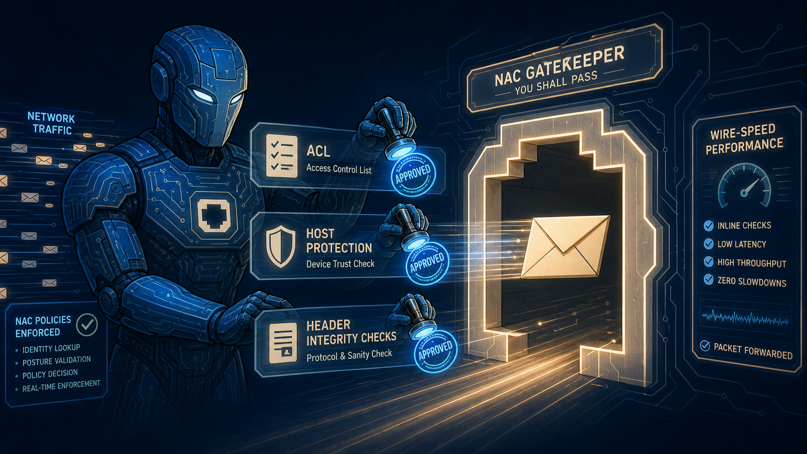
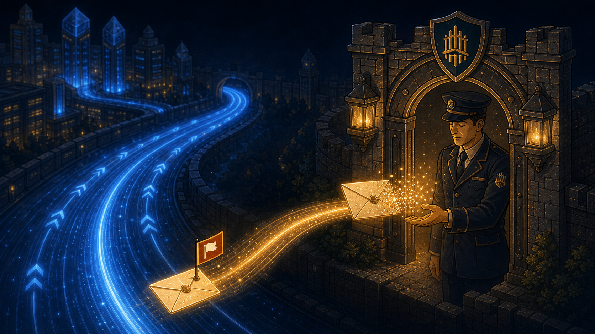

Why Packet Journey: today's content is fundamentally sequential and causal — each stage depends on the one before it (DNAT before routing, routing before policy). A single traced object moving through a pipeline reinforces the ordering far better than a static topology diagram would.
Marcus Clicks "Send" INTERFACE IN
The order leaves his terminal as a raw packet, arriving at a FortiGate network interface.
images/image-01-terminal-order.png
A wide, cinematic trading-floor illustration in warm amber and deep navy tones: a single glowing data packet, rendered as a small luminous envelope-shaped icon with a subtle order-ticket pattern on its surface, launches from a trader's desk terminal into a stream of light that arcs toward a large stylized firewall appliance in the middle distance. The trading floor background is softly blurred with rows of monitors and muted figures, emphasizing depth of field on the single glowing packet as the hero subject. Style: elegant editorial infographic illustration, not photorealistic, consistent with a premium financial-technology study guide aesthetic, color palette restricted to navy #0d1a3a, warm cream #faf5e9, and accent blue #1e40af.
Cheap Checks at the Door NP
ACL, Host Protection Engine, IP integrity header check — all handled by the network processor before anything expensive happens.

images/image-02-np-gatekeeper.png
An illustration of a sleek, minimalist mechanical gatekeeper figure made of interlocking blue circuit-board panels, standing at a glowing archway shaped like a network interface port. The gatekeeper holds up three small floating translucent tokens labeled with subtle icons (a checklist icon, a shield icon, a small header/document icon) representing ACL, Host Protection, and header integrity checks, quickly stamping each token with a blue glowing seal as the packet-envelope icon passes through. The scene should feel fast and efficient, with motion-blur light trails behind the packet to convey wire-speed. Palette: deep navy background, electric blue accents, warm cream highlights. Editorial infographic style, not photorealistic.
Destination NAT CPU / KERNEL
If the order was addressed to a published virtual IP, FortiGate resolves the real destination first.
images/image-03-dnat-signpost.png
A glowing signpost illustration at a fork in a luminous data highway, where one path is labeled with a faded translucent "Virtual Address" placard that dissolves into particles, revealing a solid, sharply-defined "Real Destination" placard underneath in warm amber light. The packet-envelope icon pauses briefly at the signpost, a small radiant beam connecting it to the newly revealed real address. Background: abstract flowing data-stream lines in deep navy, subtle grid pattern suggesting a kernel/software layer. Editorial infographic illustration style, warm amber and navy blue palette, no photorealism, no text other than the two placard labels described.
Routing Decision CPU / KERNEL
Routing, RPF check, and SD-WAN path selection now choose the correct egress interface — only possible because the real destination is known.
images/image-04-routing-compass.png
An elegant illustration of a large glowing navigational compass rendered in fine circuit-line linework, floating above a branching network of luminous pathways representing multiple possible egress interfaces (labeled subtly with small interface icons, no readable text needed). The compass needle swings and locks onto a single illuminated path as the packet-envelope icon is guided along it, other paths dimming to soft gray. Style: refined technical illustration, deep navy background with electric blue compass glow and warm amber path highlight, premium editorial infographic aesthetic, no photorealism.
Policy Lookup — The Gate That Never Skips CPU / KERNEL
Stateful inspection and policy match decide if this session is allowed to exist at all. Implicit deny lurks at the end of every policy list, for every packet, everywhere.
images/image-05-policy-tribunal.png
A dramatic, symbolic illustration of a small tribunal-like checkpoint rendered as glowing scales-of-judgment iconography made of thin blue light-lines, floating in an abstract dark navy void. The packet-envelope icon stands before the scales, which tip decisively toward a warm green glowing "pass" side, while a faint, looming shadow gate labeled with a subtle universal "deny" symbol (a simple circle-with-line icon, no text) waits ominously in the background for any packet that fails to match — conveying that this checkpoint has no exceptions, internal or external. Style: refined minimalist symbolic illustration, deep navy and green palette with amber warning undertone, editorial infographic aesthetic, not photorealistic.
Content Inspection CP
If security profiles are attached to the matched policy, the content processor performs IPS pattern matching, SSL/TLS decrypt, or antivirus scanning on the payload.
images/image-06-cp-scanner.png
An illustration of a precise, focused scanning beam of warm green light sweeping methodically across the surface of the packet-envelope icon, revealing fine internal patterns and layers within it like an X-ray, held gently in place by two elegant mechanical arms made of green-lit circuit paneling. Small translucent icons drift past representing the different checks being performed (a magnifying glass for pattern matching, a small padlock unlocking for SSL decrypt, a shield-with-checkmark for antivirus), each dissolving once cleared. Background: deep navy with soft green ambient glow, premium editorial infographic illustration style, not photorealistic.
Source NAT CPU / KERNEL
On the way out, the real source address is hidden — safe to do now, since policy already made its decision.
images/image-07-snat-cloak.png
An illustration of the packet-envelope icon passing through a shimmering, translucent amber-colored veil or cloak that elegantly replaces a small visible address marking on its surface with a new, generic address marking, rendered as a graceful dissolve-and-reform particle effect rather than anything jarring. The moment feels calm and procedural, not dramatic, conveyed through soft warm amber lighting against a deep navy background. Editorial infographic illustration style, restrained and elegant, no photorealism.
Fast Path Out NP
The network processor accelerates the packet out the egress interface. For all subsequent packets in this session, this is the ONLY stage they touch — routing and kernel processing are bypassed entirely.
images/image-08-np-launch.png
A dynamic illustration of the packet-envelope icon being launched outward through a glowing blue circular interface aperture with dramatic motion-blur light trails streaking behind it, conveying wire-speed acceleration, toward a distant softly-blurred horizon suggesting the wider network beyond the firewall. A faint ghostly trail of many identical packet-icons follows in quick succession, visually implying that subsequent packets in the same session now take this exact same fast route without detour. Deep navy background transitioning to a lighter dawn-blue horizon, electric blue accent glow, premium editorial infographic illustration style, not photorealistic.
Teardown: FIN/RST CPU
Whenever this session eventually closes, the FIN or RST packet routes back to the CPU — no matter how long the session had been fast-pathing through the NP.

images/image-09-cpu-teardown.png
An illustration of the packet-envelope icon, now marked with a small distinct closing-flag symbol, being gently redirected off the fast blue light-trail highway and back toward the same glowing gatekeeper archway seen earlier in the sequence, this time the gatekeeper figure extends a hand to calmly receive and dissolve the packet into soft fading light particles, symbolizing an orderly session close. Deep navy background, warm amber accent on the returning path, premium editorial infographic illustration style, calm and conclusive mood, not photorealistic.